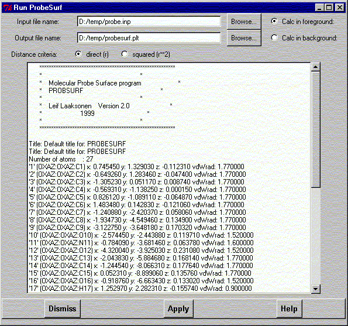

**************************************************************************
Run probesurf program widget
Leif Laaksonen CSC 1999
**************************************************************************
Run the ProbSurface program to produce a Connolly type of surface around a molecule system. You have to have an input file ready for the program which you define in the "Input file name" entry. If you don't remember the name and location of the input file you can browse by pressing the Browse button. The output file is the name of the contour grid file. If no name is given the program uses the default name, which will be placed in the "Output file name" entry.
The ProbSurf calculation can be done either in foreground or background. The foreground calculation locks gOpenMol until the calulation has finished. The background mode enables the further usage of gOpenMol while the calculation continues.
The ProbSurf program uses a direct (r) and squared (r**2) distance method for the calculation of the surfaces. Choose the method to be used.
After the calculation has finished it is possible to read in the contour file and display the surface. Answer yes or no to the question.

Line command: see run command
**************************************************************************
LUL/1999
**************************************************************************